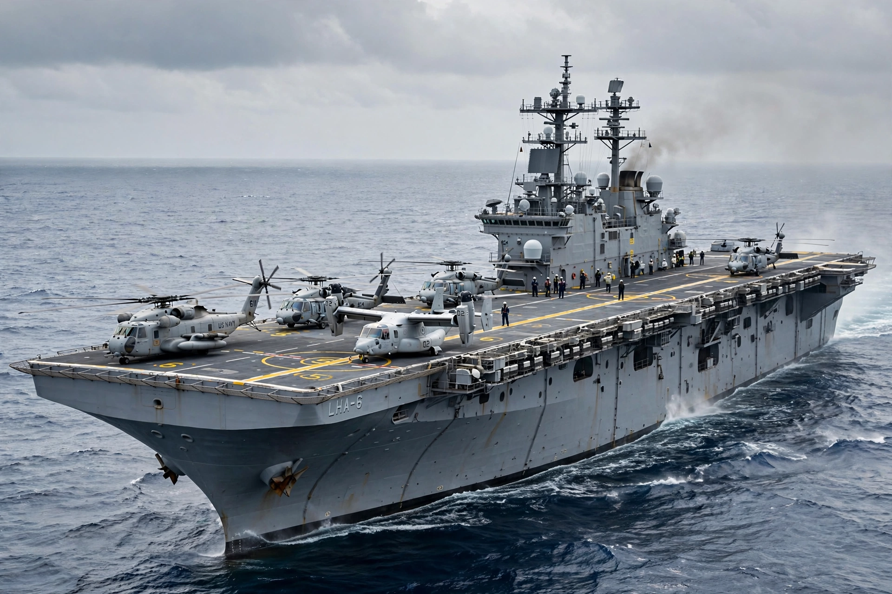

An amphibious assault ship is a type of amphibious warfare ship employed to land and support ground forces on enemy territory during an amphibious assault. The design evolved from aircraft carriers converted for use as helicopter carriers, and modern examples feature a full-length flight deck resembling a small aircraft carrier.
| Amphibious assault ship | |
|---|---|
| Type | Amphibious warfare ship |
| Role | Amphibious landings, aviation support |
| Notable classes | Wasp, America, Tarawa (US Navy); Mistral (France); Juan Carlos I (Spain) |
| Hull designations | LHA, LHD, LPH |
Specialised shipping can be divided into two types, most crudely described as ships and craft. In general, the ships carry the troops from the port of embarkation to the drop point for the assault and the craft carry the troops from the ship to the shore. Amphibious assault ships are the largest and most capable of these vessels, combining a flight deck for helicopters and STOVL aircraft, a well deck for landing craft, and accommodation for a battalion-sized landing force with its vehicles and equipment.
United States Navy amphibious assault ships are designated LHA (Landing Helicopter Assault) and LHD (Landing Helicopter Dock). The Wasp class (LHD) displaces about 40,500 tons and carries roughly 1,900 Marines, while the newer America class emphasises aviation capacity. Other operators include France (Mistral class), Spain, Australia, South Korea, Japan, Egypt, Turkey and China, whose Type 075 entered service in the 2020s.
Beyond assault, these ships are frequently used for humanitarian assistance and disaster relief because of their helicopters, hospital facilities and command spaces. British and American ships of this type took part in operations from the Falklands War to relief efforts after the 2004 Indian Ocean tsunami and the 2010 Haiti earthquake.
Amphibious assault ship — recreated from memory.